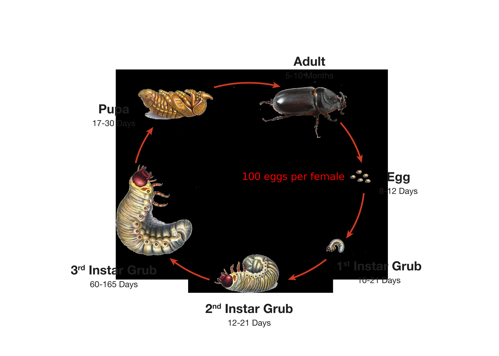
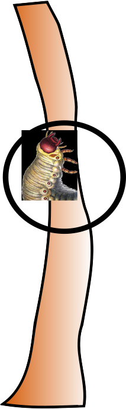

What Caused Guam's Rhino Beetle Outbreak and What Are We Doing About It?
Aubrey Moore
Biology of Coconut Rhinoceros Beetle (CRB), Oryctes rhinoceros
Coconut rhinoceros beetle (CRB) life cycle

CRB Population growth with unlimited resources is explosive
| Generation 1 | 2 |
| Generation 2 | 100 |
| Generation 3 | 5,000 |
| Generation 4 | 250,000 |
| Generation 5 | 12,500,000 |
| Generation 6 | 625,000,000 |
| Generation 7 | 1,562,500,000,000 |
| Generation 8 | 78,125,000,000,000 |
Grubs cause no damage. They feed in decaying vegetation, especially dead, standing coconut stems.

Adults cause v-shaped cuts when they bore into crowns to feed on sap. Tree mortality may occur when several beetles attack a palm at the same time during a population explosion.

Typhoon Dolphin Triggered the Current Uncotrolled CRB Outbreak on Guam
Before Typhoon Dolphin there was a lot of CRB damage in the form of bore holes and v-shaped cuts to fronds, but little mature palm mortality.

Typhoon Dolphin, which passed over Guam in 2015, created abundant CRB breeding sites throughout the island in the form of decaying vegetation.

After Typhoon Dolphin massive numbers of CRB adults emerged from breeding sites and started killing mature palms. Dead, standing palms became breeding site, generating even more adults, which kill even more palms. If we cannot control the CRB population on an island-wide basis, this positive feedback cycle will continue until the beetles run out of food after most palms have been killed.

What can be done?
- Individual trees can be protected with insecticide.
- Village-wide sanitation and use of tekken netting may reduce local damage. However, most CRB breeding sites are inaccessable: in the jungle or on military land.
- The only feasable way to save palms island-wide is to establish an effective biological control program which will stop the current outbreak.
UOG entomologists are searching for an effective insect disease pathogen, Oryctes rhinocero nudivirus (OrNV), which only attacks rhino beetles.